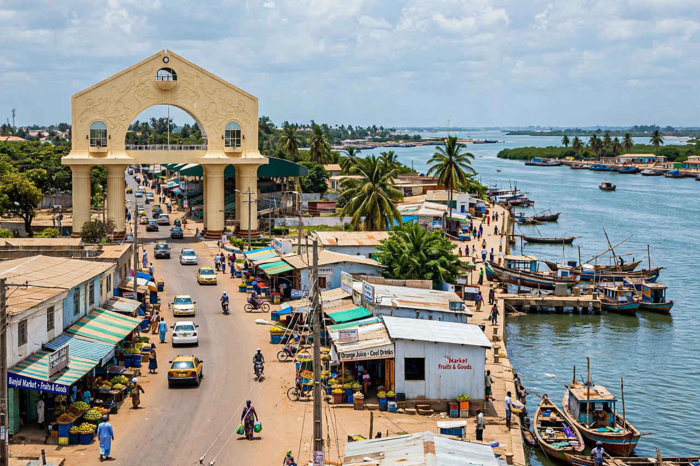

Banjul is the capital city of The Gambia, located on St Mary's Island (Banjul Island) at the mouth of the Gambia River where it meets the Atlantic Ocean. It is the country's main port and administrative centre, though the larger urban area extends to Serrekunda on the mainland.

Founded by the British in 1816 as Bathurst, named for Earl Bathurst, as a trading post and base to suppress the slave trade after Britain abolished it. It was renamed Banjul in 1973 after independence. Arch 22, built in 1996, commemorates the 1994 coup.
Banjul has a tropical savanna climate. Its economy rests on the port, peanut processing, tourism, fishing and government. Sites include the Albert Market, the National Museum and King Fahad Mosque.
See also: 2016–17 Gambian constitutional crisis